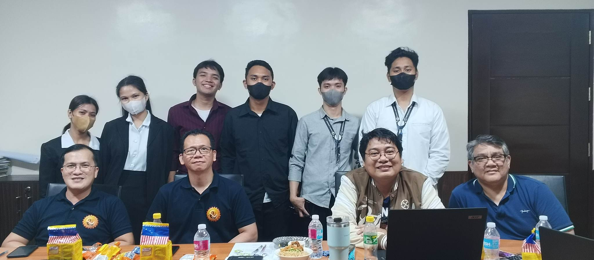

Seminar that I attended and participated


I recently attended an insightful seminar on the Internet of Things, which was an eye-opening experience that broadened my knowledge about the topic. The seminar covered a range of topics that explained the concept of IoT, its applications, and its impact on various industries. The experts provided us with real-world examples and case studies, highlighting the potential of IoT in improving efficiency, productivity, and safety. I was impressed with the depth of knowledge of the speakers and their ability to convey complex ideas in a clear and concise manner. The seminar also provided us with an opportunity to network with other attendees, who shared their experiences and insights, further enhancing our understanding of the subject. Overall, the seminar was a valuable experience that gave me a deeper appreciation of the potential of IoT and how it can transform our world.


I also recently attended an engaging seminar on Business Process Outsourcing that was informative and insightful. The seminar provided a comprehensive overview of BPO, its advantages, and its impact on businesses and industries worldwide. The speakers were experts in the field and provided us with practical examples and case studies that demonstrated the benefits of outsourcing business processes. I appreciated the panel's emphasis on the importance of identifying the right BPO partner and establishing clear communication channels to ensure success. The seminar also allowed us to network with other attendees, which enabled us to exchange ideas and best practices, further enhancing our understanding of the topic. Overall, the seminar was a valuable experience that broadened my knowledge and understanding of the BPO industry and its potential benefits for businesses.
Title defense for our proposed system
During our recent title proposal defense, the panel of experts provided us with valuable feedback that suggested we revise our proposal. While this feedback was initially disappointing, we recognized its importance in improving our work and achieving our research goals. The panel's suggestions were constructive and specific, providing us with clear direction on how to enhance our proposal. We carefully considered their feedback and incorporated it into our revised proposal, ensuring that we addressed their concerns and improved the overall quality of our work. Although the revision process was challenging and time-consuming, it was ultimately a rewarding experience that allowed us to refine our ideas and approach our research with greater clarity and purpose. We are grateful for the panel's guidance and look forward to presenting our revised proposal with confidence and enthusiasm.